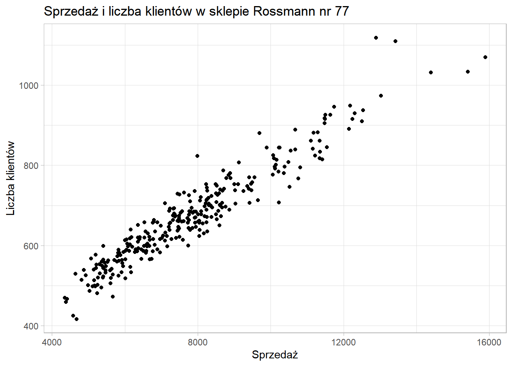
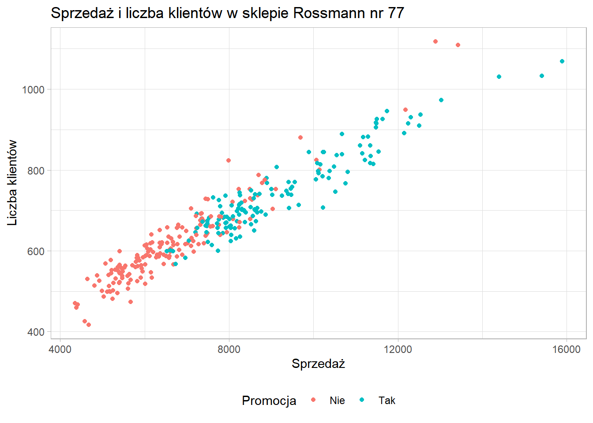

4 Wizualizacja danych
Przewodnik po wizualizacji danych
Będziemy działać na zbiorze dotyczącym sprzedaży w sklepach Rossmann.
library(tidyverse)
library(readxl)
rossmann <- read_xlsx("data/rossmann.xlsx")
sklep77 <- rossmann %>%
filter(sklep_id==77, czy_otwarty=="Tak")4.1 Wbudowane funkcje
Do prostych wykresów można wykorzystać wbudowaną funkcję plot.
plot(sklep77$sprzedaz, sklep77$liczba_klientow,
xlab = "Sprzedaż", ylab = "Liczba klientów",
main = "Sprzedaż i liczba klientów w sklepie Rossmann nr 77")
4.2 Pakiet ggplot2
Wiodący pakiet do wizualizacji danych:
- dokumentacja: https://ggplot2.tidyverse.org/
- cheatsheet
- tworzenie wykresów poprzez dodawanie (
+) kolejnych warstw
4.2.1 Wykres punktowy
Ten sam wykres co wcześniej, ale z wykorzystaniem pakietu ggplot2.

Wykonanie krok po kroku:
- Utworzenie siatki - określenie co chcemy na wykresie przedstawić
ggplot(data = sklep77, aes(x=sprzedaz, y=liczba_klientow))
W zależności od typu wykresu w funkcji aes mogą znaleźć się argumenty:
- x
- y
- fill
- size
- color
- shape
- Określenie w jaki sposób chcemy te dane przedstawić - funkcja zawsze zaczyna się od
geom_:
ggplot(data = sklep77, aes(x=sprzedaz, y=liczba_klientow)) +
geom_point()
- Edytowanie etykiet osi - funkcje
xlabiylab:
ggplot(data = sklep77, aes(x=sprzedaz, y=liczba_klientow)) +
geom_point() +
xlab("Sprzedaż") +
ylab("Liczba klientów")- Dodanie tytułu - funkcja
ggtitle
ggplot(data = sklep77, aes(x=sprzedaz, y=liczba_klientow)) +
geom_point() +
xlab("Sprzedaż") +
ylab("Liczba klientów") +
ggtitle("Sprzedaż i liczba klientów w sklepie Rossmann nr 77")
- Zmiana motywu - funkcja rozpoczynająca się od
theme_:
ggplot(data = sklep77, aes(x=sprzedaz, y=liczba_klientow)) +
geom_point() +
xlab("Sprzedaż") +
ylab("Liczba klientów") +
ggtitle("Sprzedaż i liczba klientów w sklepie Rossmann nr 77") +
theme_light()
Dostępne motywy:
- theme_bw
- theme_classic
- theme_dark
- theme_gray
- theme_light
- theme_linedraw
- theme_minimal
- theme_void
Powyższe motywy są zaimplementowane w pakiecie ggplot2, ale można także skorzystać z dodatkowych pakietów:
Albo stworzyć swój własny motyw.
Zadanie
Zmień motyw wykresu na wybrany przez siebie.
Dodamy teraz do wykresu kolejną cechę - rozpoczęcie promocji, żeby sprawdzić czy istnieje jakaś tendencja.
ggplot(data = sklep77, aes(x=sprzedaz, y=liczba_klientow, color=czy_promocja)) +
geom_point() +
xlab("Sprzedaż") +
ylab("Liczba klientów") +
ggtitle("Sprzedaż i liczba klientów w sklepie Rossmann nr 77") +
theme_light()Okazuje się dosyć interesująco, niemniej nazwa etykiety legendy nie wygląda zbyt dobrze. Żeby to poprawić musimy użyć funkcji scale_
ggplot(data = sklep77, aes(x=sprzedaz, y=liczba_klientow, color=czy_promocja)) +
geom_point() +
xlab("Sprzedaż") +
ylab("Liczba klientów") +
scale_color_discrete(name = "Promocja") +
ggtitle("Sprzedaż i liczba klientów w sklepie Rossmann nr 77") +
theme_light()
W funkcji scale_ musimy podać w jaki sposób daną cechę wizualizujemy (x/y/color/…) oraz jakiego jest typu. Oprócz nazwy w tej funkcji możemy określić wiele innych kwestii takich jak:
- wyświetlane etykiety
- początek i koniec osi
- kolory wariantów
- etykiety wariantów
ggplot(data = sklep77, aes(x=sprzedaz, y=liczba_klientow, color=czy_promocja)) +
geom_point() +
scale_x_continuous(name = "Sprzedaż") +
scale_y_continuous(name = "Liczba klientów") +
scale_color_discrete(name = "Promocja") +
ggtitle("Sprzedaż i liczba klientów w sklepie Rossmann nr 77") +
theme_light()
Zmiana pozycji legendy możliwa jest z wykorzystaniem funkcji theme:
ggplot(data = sklep77, aes(x=sprzedaz, y=liczba_klientow, color=czy_promocja)) +
geom_point() +
scale_x_continuous(name = "Sprzedaż") +
scale_y_continuous(name = "Liczba klientów") +
scale_color_discrete(name = "Promocja") +
ggtitle("Sprzedaż i liczba klientów w sklepie Rossmann nr 77") +
theme_light() +
theme(legend.position = "bottom")
ggplot(data = sklep77, aes(x=sprzedaz, y=liczba_klientow, color=czy_promocja)) +
geom_point() +
geom_smooth(method = "lm") +
scale_x_continuous(name = "Sprzedaż") +
scale_y_continuous(name = "Liczba klientów") +
scale_color_discrete(name = "Promocja") +
ggtitle("Sprzedaż i liczba klientów w sklepie Rossmann nr 77") +
theme_light() +
theme(legend.position = "bottom")4.2.2 Histogram i wykres gęstości
- sprzedaż wg promocji
4.2.3 Wykres pudełkowy
- sprzedaż wg dnia tygodnia - czynnik
4.2.4 Wykres słupkowy - z grupowaniem i bez
- liczba sklepów wg asortymentu
4.2.5 Wykres kafelkowy
- czy promocja i czy swieto szkolne
4.2.6 Uwzględnienie czasu
- sprzedaż w kolejnych dniach
4.3 Pakiet plotly
p <- ggplot(data = sklep77, aes(x=sprzedaz, y=liczba_klientow, color=czy_promocja)) +
geom_point() +
scale_x_continuous(name = "Sprzedaż") +
scale_y_continuous(name = "Liczba klientów") +
scale_color_discrete(name = "Promocja") +
ggtitle("Sprzedaż i liczba klientów w sklepie Rossmann nr 77") +
theme_light() +
theme(legend.position = "bottom")
plotly::ggplotly(p)